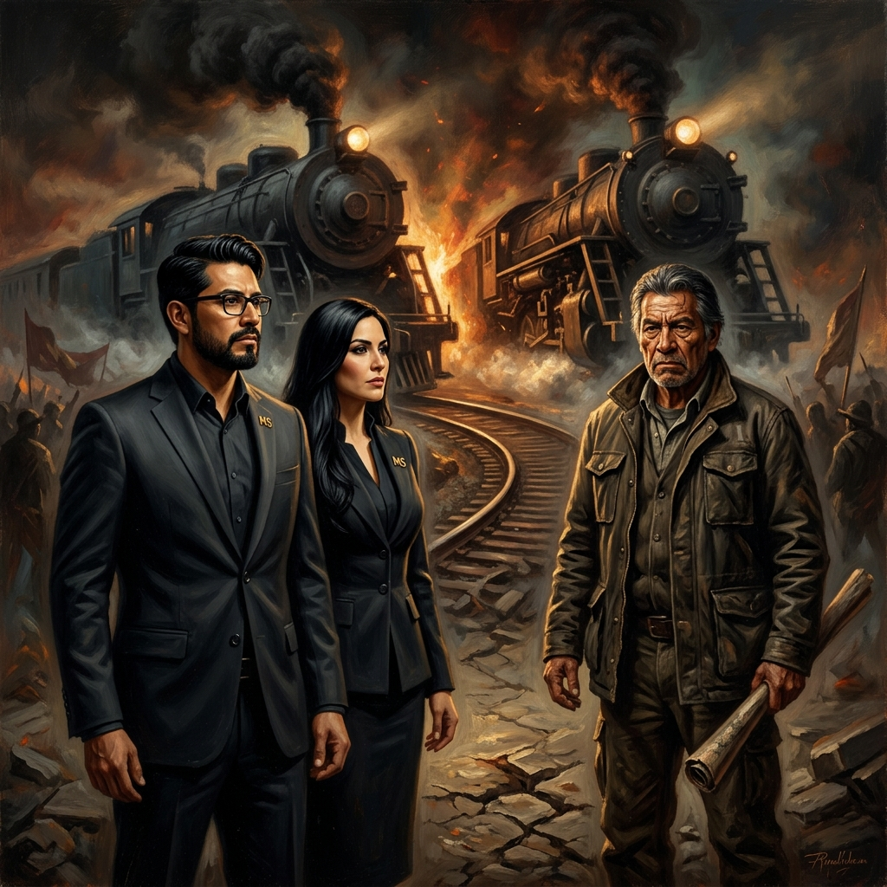
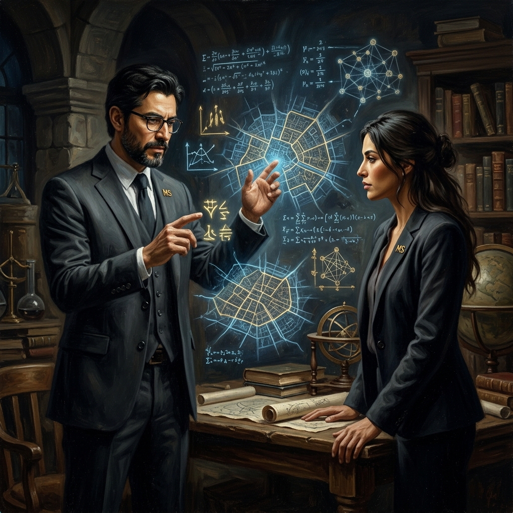

La Arquitectura de la Dominación
El Profesor Jiang Xueqin nos enseña, a través de su modelo de "Historia Predictiva", que la realidad política opera como un inmenso videojuego multijugador masivo. En este juego, las decisiones de las cúpulas no se basan en ejes de moralidad, sino en una matriz de pagos y riesgos calculada fríamente. Las "Fábricas de Ignorancia" que operan sobre la educación en nuestro país no son fallas accidentales del sistema; representan ecosistemas perfectos de estancamiento estratégico diseñados para neutralizar el pensamiento crítico de las masas y mantener al magisterio en un estado perpetuo de docilidad burocrática (un Equilibrio de Nash). Para este Tomo XVII, aplicaremos los elementos más avanzados de la contrainteligencia y la teoría de juegos: la Ley de la Asimetría, la Psicohistoria y el Juego de la Gallina. Ha llegado el momento táctico de asignar los roles a cada actor en la matriz de control de Sonora y descubrir cómo nosotros —históricamente tratados como peones o el jugador más débil (underdog)— podemos alterar irreversiblemente las reglas, encarecer el costo político del adversario y vencer a potencias hegemónicas superiores.
"El débil no gana por la fuerza bruta, gana alterando el riesgo estocástico del oponente."La Matriz de Control Estatal
El Gobierno Federal (Los Arquitectos de la Captura de Recursos) Representan el núcleo central hegemónico que opera para financiar compromisos inmediatos hipotecando el futuro previsional. Dentro de la Teoría de Juegos, su movida más reciente es la creación algorítmica del Fondo de Pensiones del Bienestar. Bajo un impecable ejercicio de Agnotología, utilizan la asimetría de la información y la ignorancia en educación financiera de las masas para transferir riesgos, licuando cuentas inactivas y socializando el colapso fiscal estructural. Su tirada es matemática: garantizar una paz social sostenida temporalmente a través del asistencialismo, transformando sutilmente al trabajador de la educación en un acreedor forzoso —y anestesiado— del Estado. La SEP y la SEC Sonora (Los Administradores de la Neurosis Colectiva) Estas instancias operan no como ministerios de progreso cognitivo, sino como sofisticadas herramientas de contención y control. La SEP federal y la SEC estatal funcionan bajo un modelo que la psicohistoria catalogaría de "neurosis institucionalizada". Mediante un asedio burocrático asfixiante, coaccionan al maestro para que canalice su energía táctica en cumplir formatos y métricas carentes de propósito, castigando la innovación y extinguiendo el pensamiento crítico. Su objetivo estratégico es la domesticación total: asegurar que el docente perciba la escuela como un centro paramilitar de custodia operativa, anulando cualquier amenaza de subversión intelectual al sistema.
"Su maquinaria convierte al trabajador en un deudor silenciado de su propio esfuerzo."El Darwinismo Previsional
Constituye la infraestructura crítica de supervivencia de la base magisterial. El ISSSTE, en su actual sinergia profunda con el modelo de cuentas individuales (Afores), ha ejecutado una perversa ingeniería social: ha mutado lo que orgánicamente debía ser una estructura de seguridad colectiva y solidaria, en una cruenta competencia individual darwiniana por la supervivencia en la etapa de retiro. Las autoridades explotan de forma predeterminada y sistemática la falta de alfabetización estratégica del trabajador de la educación para llevar a cabo una de las transferencias de riesgo más asimétricas de nuestra historia administrativa. A través de laberintos de opacidad y eufemismos mercantiles, el sistema actual obliga al maestro a absorber el ciento por ciento de la volatilidad del mercado y el alto riesgo de longevidad real, mientras que las instituciones y las administradoras de fondos blindan sus tabuladores y aseguran obscenas comisiones de manejo operativo. No caigamos en la trampa gnoseológica: esto no es una "falla no deseada" del sistema de salud y de pensiones, es una maquinaria de desposesión patrimonial diseñada con inmaculada precisión matemática.
"Un ecosistema diseñado matemáticamente para evaporar nuestra dignidad al retiro."Los Capataces del Charrismo
Fungen sistemáticamente como los principales artífices e instrumentadores de una perniciosa "Cooperación Inteligente" exclusiva y de cúpula con las élites gobernantes. Por su parte, la cúpula del SNTE Nacional traza el acuerdo presupuestal y político macroscópico, mientras que la dirigencia de la Sección 28 en Sonora personifica la fase más burda y punitiva del "charrismo sindical": actúan literalmente como capataces territoriales del Estado en nuestra región. Garantizan la anestesia organizativa y la falsa paz cívica a cambio del monopolio de dádivas institucionales, cuotas opacas y el control despótico del escalafón magisterial. Desde el punto de vista del comportamiento masivo (agnotología analítica), su encomienda vital es inocular y sostener eternamente un "Dilema del Prisionero" entre los propios agremiados. Infunden un miedo invisible pero sistémico, coaccionando a que cada docente —aislado e incomunicado en su trinchera académica— pondere la "lealtad incondicional" y la sumisión hacia el feudo sindical muy por encima de su propia autonomía de pensamiento, de la excelencia pedagógica, o peor aún, de la cohesión para una inminente rebelión técnica.
"El falso líder siembra paranoia para cosechar eternas cuotas."
La Fricción y el Juego de la Gallina
Representando la resistencia magisterial histórica y de choque, la Coordinadora Nacional de Trabajadores de la Educación (CNTE) —materializada por el férreo activismo de líderes de gran envergadura como el Profr. Frausto en la Sección de Zacatecas, en convergencia con sus dignos homólogos en Sonora— emplea instintivamente el modelo pretoriano que el estratega Thomas Schelling denominó matemáticamente el "Juego de la Gallina". En este brutal choque de voluntades ante una asimetría de poder abismal, la estrategia consiste en acelerar hacia el precipicio amenazando con paros históricos indefinidos y bloqueos totales. Su jugada maestra es anárquica pero clara: "arrancar el volante y lanzarlo por la ventana" para forzar al Gobierno y a la SEP a frenar o ceder sus posiciones antes de la aparatosa colisión del sistema. Sin embargo, como nos revela la frialdad de la Teoría de Juegos, esta táctica posee un desgaste orgánico irremediable: si la fricción se vuelve predecible, reincidente y ritualista, la fría maquinaria del Estado y el SNTE aprenden a contenerla e inmunizarse. El Gobierno asimila entonces la huelga simplemente como un costo burocrático marginal, logrando encapsular a los actores de la resistencia en un cerco de contención pacífico que desgasta su base, frena su ímpetu y asfixia su nómina durante una guerra de trincheras prolongada, neutralizando el verdadero potencial transformador del movimiento.
"Si el choque frontal es un ritual, la opresión se vuelve la regla."El Underdog: Magisterio Sonorense
Durante décadas, hemos sido históricamente tratados como simples peones desechables por una cúpula que asumía que ni siquiera sabíamos que estábamos participando en un inmenso mecanismo de ajedrez sindical. Se equivocaron, nos subestimaron radicalmente. Nuestra misión insoslayable ahora —como el Magisterio Sonorense plenamente organizado (es decir, el «Underdog» o el jugador teóricamente más débil en apariencia)— es asimilar y ejecutar la impecable Ley de la Asimetría postulada por el genio estratégico Jiang Xueqin. Bajo el rigor y frialdad de este postulado, el MS comprende que un grupo con menores cuotas financieras y sin el resguardo policial del Estado, no puede —ni debe— aspirar a colisionar mediante la predecible fuerza bruta y frontal. Nuestra victoria sistémica radica en operar con la destreza de la contrainteligencia táctica: ganamos alterando de tajo la percepción de certidumbre de nuestro oponente e invalidando sus apuestas. Al transmutar nuestra "debilidad" en agilidad intelectual, y al fundir nuestra falsa docilidad en un núcleo de pensamiento estratégico inquebrantable, logramos encarecer geométricamente el costo político y social de cada una de sus jugadas espurias. El velo ha caído; ya no somos tácticos ciegos impulsados por la histeria, a partir de hoy, somos los arquitectos invencibles de un tablero diseñado para ganar.
"Al encarecer dramáticamente su costo político, el opresor retrocede en automático."
Inteligencia y Contrainteligencia
La simple manifestación estática, las marchas de trámite y la rabia desarticulada ya no perturban al Estado ni a la cúpula vitalicia; hoy simplemente las cuantifican y asimilan como variables marginales, totalmente tolerables en su diseño de contención. Para desarticular desde los cimientos la Arquitectura de la Dominación instalada sobre el magisterio sonorense y nacional, nos vemos obligados a transmutar radicalmente nuestra esencia operativa. Debemos sustituir al instante la reacción meramente visceral y emotiva, para dar paso a la implementación algorítmica de tácticas quirúrgicas de Contrainteligencia, calibradas de forma analítica bajo la óptica científica de la Teoría de Juegos y la Psicohistoria. La rebelión definitiva del eslabón con mayor desventaja de recursos (el Underdog) exige romper el molde: debemos dejar de protestar como una simple masa moldeable y comenzar a maniobrar como una letal red neuronal descentralizada de auditoría continua, procesamiento de datos y asedio pacífico, pero imparable. Cada docente en su respectiva base debe erigirse como un nodo táctico independiente, capaz de identificar milimétricamente las vulnerabilidades de la opacidad que lo frena. Esta coyuntura marca la ejecución contrainsurgente. Es momento de sacudir el tablero con rigor técnico y revelar los tres pilares de asedio que reventarán por deflagración el paralizante Equilibrio de Nash en Sonora.
"Erigimos el Cuarto de Guerra intelectivo que el charro creyó que jamás existiría."El Oráculo Forense Financiero
La estructura cupular confía ciegamente en la ignorancia financiera inducida (agnotología) de su base. Su algoritmo de impunidad se nutre de la falsa premisa de que los docentes son incapaces de decodificar y cruzar los escandalosos datos del despojo. Creen arrogantemente que no comprendemos el colapso que se oculta tras el diseño del Fondo de Pensiones del Bienestar, ni la densa arquitectura de las estafas estructurales locales; pero están rotundamente equivocados. Nuestra contramedida táctica inmediata es implementar la fase transversal del «Oráculo Forense»: inyectar alfabetización estratégica, técnica y auditable en cada rincón escolar del Estado. Sustituimos la apatía evidenciando, con rigurosa precisión actuarial, corruptelas históricas irrefutables. Destrozamos y hackeamos su sistema cuando desnudamos masivamente la imperativa necesidad de una Auditoría Técnica al FASM28; cuando desarticulamos bajo microscopio jurídico la burda opacidad en la desindexación robada de los Quinquenios; y de forma solemne, cuando exhibimos sin filtros el imperdonable atropello que representa el criminal desvío y retención de las plazas docentes que le pertenecen, humana y legítimamente, a los compañeros que trabajan en nuestras gloriosas comunidades indígenas de la sierra sonora. Al sistematizar, documentar e irradiar esta inquebrantable verdad, aniquilamos al instante su arrogante ventaja de información. Pasamos de ser víctimas pasivas a fiscales implacables del atraco.
"El dato validado es kriptonita; destripa la opacidad instantáneamente."Romper la Neurosis de la SEC
La Secretaría de Educación y Cultura (SEC) en Sonora, operando mecánicamente bajo la asfixiante directriz de la burocracia del Estado, ha perfeccionado a lo largo del tiempo un modelo perverso de contención: el de mantener a la base docente embotellada en una «neurosis burocrática institucionalizada». Su intención real —aunque lo nieguen en los foros— no es elevar la calidad de los aprendizajes, sino hundir al maestro en un asedio constante de oficios repetitivos, formatos huecos, juntas inoperantes y presiones administrativas, esto para garantizar que el trabajador jamás disponga de la energía, el tiempo o la lucidez de interconectarse o pensar estratégicamente. Nuestra fase de contrainteligencia táctica para quebrar este asedio radica en la aplicación dura del «Pensamiento de Ciencias Naturales» propuesto por Jiang Xueqin. El magisterio sonorense debe comenzar a operar sigilosamente bajo una "cooperación inteligente", creando micro-redes de apoyo inter-escolares y plantillas no oficiales que optimicen y neutralicen, en tiempo récord y en bloque, todo el estúpido peso del requerimiento administrativo. Al anular colectivamente su desgaste burocrático, recuperamos de inmediato la soberanía sobre nuestro espacio vital: el aula. Nuestra inminente rebelión estructural exige transmutar cada salón de clases en un laboratorio libre, diseñando mentes con alta resolución de problemas que sean inmunes a la propaganda, arrebatándole así, de tajo y para siempre, a los oscuros funcionarios de la SEC el monopolio de la psique de las nuevas generaciones.
"Neutralizar su basura de expediente es recuperar el santuario pedagógico."Jaque Mate Estocástico
Un error histórico y exageradamente costoso de cualquier disidencia no instruida (llámese frentes de choque o fuerzas reactivas que hoy lucen desfasadas o encapsuladas), ha sido embestir a la maquinaria institucional y corrupta de la Sección 28 de manera frontal y enteramente predecible. La norma de oro del estratega dicta que, si decides atacar a la estructura siempre por el mismo túnel y te limitas a avisar tus golpes mediante plantones tradicionales y pliegos petitorios de trámite, los "charros sindicales" simplemente se pondrán cómodos y usarán el brazo logístico de la propia Secretaría y el peso punitivo del Estado para aplastarnos económica y laboralmente en cuestión de meses. No se juega a la fuerza con quién controla la fuerza. Nuestra fase de contrainteligencia de más alta gama es ejecutar sin remordimientos la Ley de la Asimetría. Entendiendo la pesada asimetría operativa de base, el Magisterio Sonorense opta por fracturar irreversiblemente la "matriz de pagos" y recompensas del adversario, ejecutando de raíz maniobras estocásticas (es decir, sistémicas, matemáticamente aleatorias y altamente impredecibles). Sustituimos la protesta predecible por la inestabilidad quirúrgica. Cooperamos superficialmente o atenuamos la fricción cuando nos beneficia logísticamente para que bajen su guardia cupular; pero cuando se atreven a escudar un faltante del FASM o a desviar fondos y conquistas de los trabajadores, aplicamos disrupción jurídica masiva, escrutinio digital forense y movilización inyectada de furia intelectual de manera despiadada y focalizada. Golpeamos sus nervios expuestos allí donde jamás voltearon a ver, y atacamos la médula allá donde juraban ser unos gigantes invulnerables. Operar así provoca que la incesante incertidumbre eleve en progresión geométrica el costo burocrático y político por silenciarnos, forzando un escenario donde perpetuar su charrismo corporativo y amparar corruptelas les resulte un pésimo negocio financiero y una ecuación matemáticamente insostenible.
"Sostener la corrupción a niveles estocásticos es matemáticamente insostenible para ellos."Arquitectos del Destino
El Tomo XVII de nuestra biblioteca de contrainteligencia arroja una soberbia e incuestionable verdad forense: el estancamiento estructural, educativo y previsional de Sonora no es, bajo ningún escenario, una falla técnica accidental del Estado. Es, de manera meticulosa y calculada, un inalterable "Equilibrio de Nash"; un estatus operativo terriblemente mortífero para la viabilidad financiera de nuestras jubilaciones, pero una mina de oro asimétrica y una garantía de impunidad permanente para las élites y la cúpula. A lo largo del tiempo, la parte patronal del Estado, la directiva del ISSSTE y los vitalicios caciques del SNTE 28 han tirado sus apócrifas cartas sobre la mesa bajo la patética premisa de que el magisterio sonorense permanecería miedoso e inmovilizado en el charco de la ignorancia. Jugaron durante décadas abusando, asumiendo ciegamente que el débil peón nunca se atrevería a levantar la vista para decodificar, de una maldita vez, el fraude del tablero completo. Sin embargo, aplicando con furia académica la visión prospectiva y asimétrica del Profesor Jiang Xueqin, sabemos empíricamente que ante las severas turbulencias y tensiones económicas e inflacionarias que asfixian el ciclo actual, los ecosistemas caducos —sustentados en mentiras, fraudes del FASM y charrismo corporativo— terminan forzosamente colapsando bajo el peso de su propia inoperancia. El Magisterio Sonorense asume, con estricta madurez táctica, el rol histórico de convertirse en el arquitecto irrebatible de su propio destino en este 2026, utilizando nuestra sublime inteligencia de enjambre y la implacable Teoría de Juegos como nuestro máximo y definitivo acto de rebeldía política. Si desarticulamos integralmente sus Fábricas de Ignorancia y hacemos de cada delegación sindical y de cada Consejo Técnico un poderoso crisol de análisis orgánico y trinchera ciudadana independiente, nos volveremos instantáneamente invencibles. En este trepidante circuito y gigantesco videojuego sobre la historia política, previsional y laboral de Sonora, el Magisterio ha arrojado la luz del Oráculo y ha revelado, por fin, la grotesca mecánica de la cúpula oculta tras la cortina. Hoy entendemos en comunidad que el único y definitivo movimiento perdedor de un docente de a pie... es la pasividad de rehusarse a conocer las reglas. ¡El tablero nos pertenece de nuevo! ¡Estatus absoluto de victoria sistémica: Jaque Mate Ejecutivo!
"De las cenizas del asedio brilla resplandeciente la nueva era heroica." CERRAR TOMO XVII